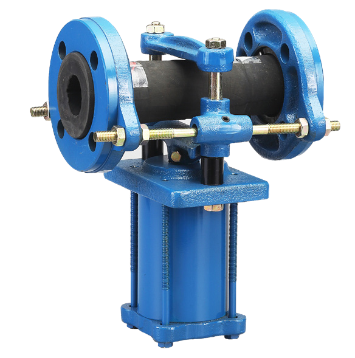
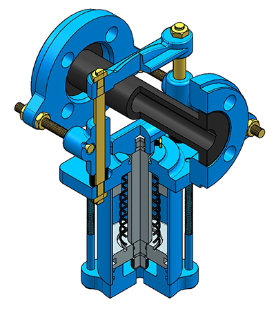

블라스트 부품 / 핀치밸브
핀치밸브 Pinch Valve
단동식 공압 실린더(액츄에이터)가 내부 고무 슬리브(Pinch Rubber)를 압착하여 유로를 차단하는 공압 구동식 직관형 자동 차단 밸브입니다. 쇼트 에어 블라스트 탱크의 배기 라인 및 연마재·공압 배관 라인에 설치되어 탱크 내 압력 공기를 배출하거나 유체·연마재 흐름을 신속하게 개폐합니다.


작동 원리 및 구조적 특징 Features & Mechanism
- 고무 슬리브 압착 차단 방식: 시중의 볼밸브나 수동 제어밸브와 달리, 공압 실린더에 압력이 가해지면 내부 직관형 고무 슬리브를 직접 눌러 유로를 차단합니다.
- 연마재·분체 배관 최적화 (막힘·마모 최소화): 유로 내부에 걸리는 밸브 디스크나 틈새가 없는 직관 구조이므로 쇼트볼·그리트·분체 통과 시 끼임 고장이나 본체 마모가 적습니다.
- 상시 열림(Normally Open) 단동식 공압 제어: 평상시 관로가 열려 있으며, 솔레노이드 밸브 신호로 파일럿 에어가 공급되면 슬리브를 압착해 관로를 닫고, 에어가 해제되면 내장 스프링 복원력으로 슬리브가 원형으로 복귀하며 다시 열립니다.
- 콤팩트한 일체형 설계 및 소모품 분리 구매: 바디·액츄에이터·슬리브가 콤팩트하게 결합되어 설치 공간 효율이 높으며, 밸브 완제품 세트 또는 소모품인 핀치러버(슬리브)만 별도 구매해 교체할 수 있습니다.
주요 사양 Specifications
| 모델 (Model) | DPV-25, DPV-40 |
|---|---|
| 작동 방식 (Operation) | 상시 열림 (Normally Open · 파일럿 에어 공급 시 닫힘) |
| 적용 배관 사이즈 (Available Size) | 1" (25A), 1½" (40A) |
| 플랜지 규격 (Flange) | JIS (KS) 10K, ANSI 150LB |
| 파일럿 포트 (Pilot Port) | PT ¼" |
| 사용 압력 (Working Pressure) | 5 ~ 9 kg/㎠ |
| 중량 (Weight) | 10 kg (DPV-25) / 12 kg (DPV-40) |
| 적용 슬리브 (Pinch Rubber) | Yokohama Rubber: APV-25 (길이 200mm) · APV-40 (길이 230mm) |
핀치러버 (고무 슬리브) 안내 Pinch Rubber (Sleeve)

- 요코하마(Yokohama) 고무 슬리브 적용: 고탄력·고내마모 특성의 일본 요코하마 고무 슬리브를 적용해 고압 및 반복 압착 환경에 적합합니다.
- 규격 및 길이 구분: 25A (APV-25, 길이 200mm)와 40A (APV-40, 길이 230mm)는 전체 길이 차이로 현장에서도 규격을 손쉽게 구별할 수 있습니다. (※ 그 외 50A, 65A, 80A 규격은 별도 주문 대응 가능)
견적·규격 문의 051-319-2332 · daehatw@daum.net